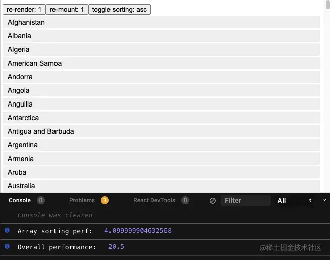

我们应该在什么场景下使用 useMemo 和 useCallback ？
参考答案
前言
useMemo 和 useCallback 是 React 的内置 Hook，通常作为优化性能的手段被使用。他们可以用来缓存函数、组件、变量，以避免两次渲染间的重复计算。但是实践过程中，他们经常被过度使用：担心性能的开发者给每个组件、函数、变量、计算过程都套上了 memo，以至于它们在代码里好像失控了一样，无处不在。
本文希望通过分析 useMemo/useCallback 的目的、方式、成本，以及具体使用场景，帮助开发者正确的决定如何适时的使用他们。赶时间的读者可以直接拉到底部看结论。
我们先从 useMemo/useCallback 的目的说起。
为什么使用 useMemo 和 useCallback
使用 memo 通常有三个原因：
- ✅ 防止不必要的 effect。
- ❗️防止不必要的 re-render。
- ❗️防止不必要的重复计算。
后两种优化往往被误用，导致出现大量的无效优化或冗余优化。下面详细介绍这三个优化方式。
防止不必要的 effect
如果一个值被 useEffect 依赖，那它可能需要被缓存，这样可以避免重复执行 effect。
const Component = () => {
// 在 re-renders 之间缓存 a 的引用
const a = useMemo(() => ({ test: 1 }), []);
useEffect(() => {
// 只有当 a 的值变化时，这里才会被触发
doSomething();
}, [a]);
// the rest of the code
};useCallback 同理：
const Component = () => {
// 在 re-renders 之间缓存 fetch 函数
const fetch = useCallback(() => {
console.log('fetch some data here');
}, []);
useEffect(() => {
// 仅fetch函数的值被改变时，这里才会被触发
fetch();
}, [fetch]);
// the rest of the code
};当变量直接或者通过依赖链成为 useEffect 的依赖项时，那它可能需要被缓存。这是 useMemo 和 useCallback 最基本的用法。
防止不必要的 re-render
进入重点环节了🔔。正确的阻止 re-render 需要我们明确三个问题：
- 组件什么时候会 re-render。
- 如何防止子组件 re-render。
- 如何判断子组件需要缓存。
1\. 组件什么时候会 re-render
三种情况：
- 当本身的 props 或 state 改变时。
- Context value 改变时，使用该值的组件会 re-render。
- 当父组件重新渲染时，它所有的子组件都会 re-render，形成一条 re-render 链。
第三个 re-render 时机经常被开发者忽视，导致代码中存在大量的无效缓存。
例如：
const App = () => {
const [state, setState] = useState(1);
const onClick = useCallback(() => {
console.log('Do something on click');
}, []);
return (
// 无论 onClick 是否被缓存，Page 都会 re-render
<Page onClick={onClick} />
);
};当使用 setState 改变 state 时，App 会 re-render，作为子组件的 Page 也会跟着 re-render。这里 useCallback 是完全无效的，它并不能阻止 Page 的 re-render。
2\. 如何防止子组件 re-render
必须同时缓存 onClick 和组件本身，才能实现 Page 不触发 re-render。
const PageMemoized = React.memo(Page);
const App = () => {
const [state, setState] = useState(1);
const onClick = useCallback(() => {
console.log('Do something on click');
}, []);
return (
// Page 和 onClick 同时 memorize
<PageMemoized onClick={onClick} />
);
};由于使用了React.memo，PageMemoized 会浅比较 props 的变化后再决定是否 re-render。onClick 被缓存后不会再变化，所以 PageMemoized 不再 re-render。
然而，如果 PageMemoized 再添加一个未被缓存的 props，一切就前功尽弃 🤯 ：
const PageMemoized = React.memo(Page);
const App = () => {
const [state, setState] = useState(1);
const onClick = useCallback(() => {
console.log('Do something on click');
}, []);
return (
// page WILL re-render because value is not memoized
<PageMemoized onClick={onClick} value={[1, 2, 3]} />
);
};由于 value 会随着 App 的 re-render 重新定义，引用值发生变化，导致 PageMemoized 仍然会触发 re-render。
现在可以得出结论了，必须同时满足以下两个条件，子组件才不会 re-render：
- 子组件自身被缓存。
- 子组件所有的 prop 都被缓存。
3\. 如何判断子组件需要缓存
我们已经了解，为了防止子组件 re-render，需要以下成本：
- 开发者工作量的增加： 一旦使用缓存，就必须保证组件本身以及所有 props 都缓存，后续添加的所有 props 都要缓存。
- 代码复杂度和可读性的变化：代码中出现大量缓存函数，这会增加代码复杂度，并降低易读性。
除此之外还有另外一个成本：性能成本。 组件的缓存是在初始化时进行，虽然每个组件缓存的性能耗费很低，通常不足1ms，但大型程序里成百上千的组件如果同时初始化缓存，成本可能会变得很可观。
所以局部使用 memo，比全局使用显的更优雅、性能更好，坏处是需要开发者主动去判断是否需要缓存该子组件。
🤨 那应该什么时候缓存组件，怎么判断一个组件的渲染是昂贵的？
很遗憾，似乎没有一个简单&无侵入&自动的衡量方式。通常来说有两个方式：
- 人肉判断，开发或者测试人员在研发过程中感知到渲染性能问题，并进行判断。
- 通过工具，目前有一些工具协助开发者在查看组件性能:
- 如 React Dev Tools Profiler，这篇文章介绍了使用方式
- 如这个 hooks：useRenderTimes
另外，React 在 16.5版本后提供了 Profiler API：_它可以识别出应用中渲染较慢的部分，或是可以使用类似 memoization 优化的部分_。所以可以通过 puppeteer 或 cypress 在自动化集成中测试组件性能，这很适合核心组件的性能测试。
防止不必要的重复计算
如 React 文档所说，useMemo 的基本作用是，避免在每次渲染时都进行高开销的计算。
🤨 那什么是“高开销的计算”？
高开销的计算其实极少出现，如下示例，对包含 250 个 item 的数组 countries 进行排序、渲染，并计算耗时。
const List = ({ countries }) => {
const before = performance.now();
const sortedCountries = orderBy(countries, 'name', sort);
// this is the number we're after
const after = performance.now() - before;
return (
// same
)
};
结果如图所示，排序耗时仅用了 4 毫秒，而渲染图中的 List 组件（仅仅只是 button + 文字）却用了 20 毫秒，5倍的差距，代码详见 codesandbox.。 大部分情况下，我们的计算量要比这个 250 个 item 的数组少，而组件渲染要比这个 List 组件复杂的多，所以真实程序中，计算和渲染的性能差距会更大。
可见，组件渲染才是性能的瓶颈，应该把 useMemo 用在程序里渲染昂贵的组件上，而不是数值计算上。当然，除非这个计算真的很昂贵，比如阶乘计算。
至于为什么不给所有的组件都使用 useMemo，上文已经解释了。useMemo 是有成本的，它会增加整体程序初始化的耗时，并不适合全局全面使用，它更适合做局部的优化。
为什么 React 没有把缓存组件作为默认配置？
关于这点 Dan Abramov 在推文上也给出了解释（虽然是个类比 😅）：
评论区里 react 的另一位核心开发者 Christopher Chedeau 也参与了讨论。 简而言之，他们认为：
- 缓存是有成本的，小的成本可能会累加过高。
- 默认缓存无法保证足够的正确性。
原因 2 的原文：correctness is not guaranteed for everything because people can mutate things. Christopher Chedeau 未给出进一步解释。或许他是指可能会导致跟 PureComponent相同的问题，即浅比较 mutate things 时，由于浅比较相等，导致组件未能 update 的问题。
结论
讲到这里我们可以总结出 useMemo/useCallback 使用准则了：
- 大部分的 useMemo 和 useCallback 都应该移除，他们可能没有带来任何性能上的优化，反而增加了程序首次渲染的负担，并增加程序的复杂性。
- 使用 useMemo 和 useCallback 优化子组件 re-render 时，必须同时满足以下条件才有效。
- 子组件已通过 React.memo 或 useMemo 被缓存
- 子组件所有的 prop 都被缓存
- 不推荐默认给所有组件都使用缓存，大量组件初始化时被缓存，可能导致过多的内存消耗，并影响程序初始化渲染的速度。
关于第三点有相反观点，详见：Why We Memo All the Things，作者推荐默认给全部组件都加上 React.memo，并给所有 props 都套上 useMemo。他认为这样可以降低工程师心智负担，让工程师不必再自己判断什么时候使用 memorize。
useMemo 和 useCallback 是 React Hooks 中常用的性能优化手段,应该在以下场景下使用:
- 计算密集型操作 - useMemo:
- 当一个组件中存在一些复杂的计算,并且这些计算的结果会被多次使用时,可以使用 useMemo 缓存计算结果。
- 这样可以避免每次渲染时都重复执行这些昂贵的计算操作,提高组件的性能。
- 依赖项变化时重新创建 - useCallback:
- 当一个组件需要传递函数给子组件时,如果该函数依赖于组件的 props 或 state,那么可以使用 useCallback 缓存该函数。
- 这样可以确保只有当依赖项发生变化时,函数才会被重新创建,避免不必要的重新渲染。
- memo 和 shouldComponentUpdate 配合使用 - useMemo 和 useCallback:
- 将 useMemo 和 useCallback 与 React.memo 或shouldComponentUpdate 结合使用,可以进一步优化组件的性能。
- 例如,对于子组件,可以使用 React.memo 进行shallow comparison比较,再配合 useMemo 和 useCallback 优化父组件。
- 大量重复的渲染 - useMemo:
- 当一个组件会进行大量的重复渲染时,可以使用 useMemo 缓存一些中间计算结果,减轻 CPU 负担。
- 这样可以显著提高组件的整体性能。
总的来说,useMemo 适用于缓存昂贵的计算,useCallback 适用于缓存依赖项变化时重新创建的函数。合理使用这两个 Hooks 可以有效地优化 React 应用的性能。